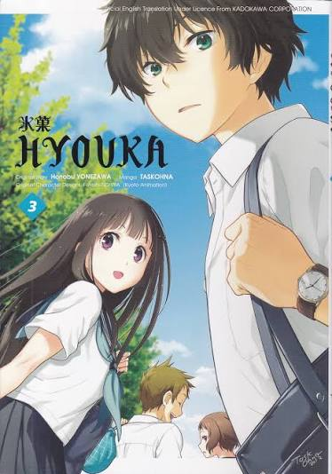
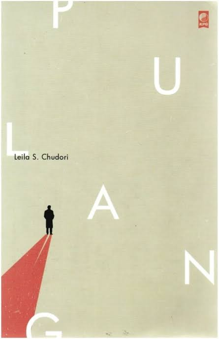
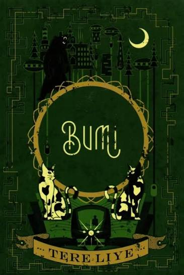

Buku novel
Temukan berbagai koleksi buku Novel.

Hyouka
Sinopsis:
Novel ini menceritakan Houtarou Oreki seorang siswa SMA yang menjalani hidupnya dengan motto menghemat energi sebanyak yang dia bisa. Sayangnya, hari-harinya yang damai berakhir ketika kakak perempuannya, Tomoe memaksanya untuk menyelamatkan Klub Sastra Klasik. Klub tersebut terancam bubar karena tidak ada anggota baru yang mendaftar. Kesulitan Oreki untuk menjalani klub tersebut terbantu setelah ia bertemu dengan siswi bernama Eru Chitanda. Oreki yang berpikir bahwa hidupnya akan terbantu oleh Eru malah sebaliknya, Oreki terjerat karena kepribadian dan rasa penasarannya. Klub Sastra Klasik memiliki empat anggota yaitu, Houtarou Oreki, Eru Chitanda, Satoshi Fukube, dan Mayaka Ibara. Empat sekawan ini memecahkan misteri sederhana dengan kemampuan menarik milik Oreki yang mengesankan. Misteri apa saja yang akan dibahas oleh empat sekawan ini?

Classroom of the Elite
Sinopsis:
Classroom of the Elite menceritakan tentang sekolah yang didirikan oleh pemerintah Jepang untuk mendidik, melatih, dan membina generasi muda terbaik. Kisahnya berfokus pada seorang siswa bernama Kiyotaka Ayanokōji. Ia dikenal pendiam dan kurang pandai berteman. Namun, meski dikenal kerap menjaga jarak, Kiyotaka Ayanokōji memiliki kecerdasan yang tinggi. Ia sendiri adalah siswa kelas D, kelas buangan bagi siswa yang prestasinya sangat rendah. Perlahan Kiyotaka Ayanokōji pun mulai berubah setelah bertemu Suzune Horikita dan Kikyō Kushida, dua siswa wanita di kelasnya. Keadaan juga perlahan berubah, saat Kiyotaka mulai terlibat dalam banyak urusan dengan siswa lain di kelasnya yang sangat menyedihkan. Ia juga mencoba untuk mengeluarkan kemampuannya bersama para siswa di kelasnya untuk naik sampai ke kelas A.

Laut Bercerita
Sinopsis:
Diceritakan dari sudut pandang Biru Laut. Ia adalah seorang mahasiswa program studi Sastra Inggris di Universitas Gadjah Mada, Yogyakarta. Laut memiliki ketertarikan terhadap dunia sastra dan tulisan karena turun dari ayahnya yang merupakan seorang wartawan Harian Solo. Laut memiliki banyak koleksi buku sastra klasik, baik dalam bahasa Indonesia maupun bahasa Inggris. Saat itu, beberapa buku sempat dilarang peredarannya oleh pemerintah karena dianggap membahayakan, termasuk buku-buku karya penulis Pramoedya Ananta Toer. Rasa penasaran Laut terhadap buku karya Pramoedya membuatnya nekat untuk memfotokopi buku-buku tersebut secara diam-diam. Di tempat fotokopi langganannya, Laut bertemu dengan Kasih Kinanti. Ia adalah senior Fakultas Politik yang memiliki minat bacaan yang sama dengan Laut. Pertemuannya dengan Kinan, memperkenalkan Laut pada organisasi Winatra. Dari organisasi ini Laut semakin aktif dalam kegiatan diskusi buku bersama anggota lainnya. Tidak hanya membahas buku-buku berhaluan "kiri", organisasi Winatra sering melakukan kegiatan aktivis dan bahkan sempat merencanakan sebuah pergerakan untuk terbebas dari rezim baru dan melawan doktrin pemerintah.

Laskar Pelangi
Sinopsis:
Novel Laskar Pelangi mengisahkan perjuangan sekelompok anak di desa Gantong, Belitung Timur, dalam meraih pendidikan di tengah keterbatasan. Cerita dimulai ketika sekolah Muhammadiyah mereka hampir ditutup, namun diselamatkan oleh kedatangan siswa baru. Dari sana, mereka menghadapi berbagai tantangan, mulai dari kondisi sekolah yang memprihatinkan hingga tekanan sosial dan ekonomi. Namun, melalui persahabatan dan tekad yang kuat, mereka belajar bahwa pendidikan adalah kunci untuk masa depan yang lebih baik. Selama perjalanan mereka, persahabatan mereka semakin kuat, dan mereka belajar untuk saling mendukung satu sama lain dalam menghadapi segala rintangan. Novel ini juga menggambarkan keindahan alam dan budaya lokal Belitung yang kaya, menginspirasi pembaca dengan semangat pantang menyerah.

Harry Potter
Sinopsis:
Harry Potter adalah yatim piatu yang tinggal bersama paman dan bibinya yang kasar, keluarga Dursley. Pada ulang tahunnya yang ke-11, ia mengetahui bahwa dirinya adalah seorang penyihir, dan bahwa ia terkenal di dunia sihir karena selamat dari serangan Lord Voldemort, penyihir jahat yang membunuh orang tuanya. Harry lalu bersekolah di Hogwarts, sekolah sihir. Di sana ia berteman dengan Ron Weasley dan Hermione Granger, belajar sihir, dan bermain Quidditch. Namun, setiap tahun ia dan kedua sahabatnya menghadapi misteri dan bahaya baru yang ternyata berkaitan dengan Voldemort yang berusaha bangkit kembali. Seiring waktu, Harry menemukan kebenaran tentang masa lalunya dan bahwa jiwa Voldemort terbagi ke dalam beberapa benda yang disebut Horcrux. Untuk mengalahkannya, Harry, Ron, dan Hermione harus menghancurkan semua Horcrux itu, hingga berujung pada pertempuran terakhir di Hogwarts. Tema utama seri ini adalah persahabatan, keberanian, pengorbanan, dan kekuatan cinta melawan kejahatan.

The Maze Runner
Sinopsis:
Thomas terbangun di dalam lift yang bergerak naik, tanpa ingatan apa pun kecuali namanya. Lift itu membawanya ke Glade, area terbuka yang dikelilingi tembok raksasa dan dihuni puluhan remaja laki-laki yang tiba dengan cara yang sama. Tidak ada yang tahu siapa yang mengirim mereka atau mengapa. Di sekeliling Glade terdapat labirin raksasa yang pintunya terbuka saat siang dan tertutup rapat saat malam. Selama tiga tahun, para Runner menjelajahi dan memetakan labirin itu untuk mencari jalan keluar, tetapi belum ada yang berhasil. Di dalamnya berkeliaran makhluk mengerikan bernama Grievers yang mengincar siapa pun yang terjebak saat malam. Thomas yang penuh rasa ingin tahu ingin menjadi Runner. Situasi berubah drastis ketika Teresa, satu-satunya perempuan, tiba dengan pesan bahwa semuanya akan segera berubah. Sejak itu, Thomas dan teman-temannya harus memecahkan teka-teki labirin sebelum terlambat, sambil menghadapi kecurigaan di antara mereka dan rahasia di balik eksperimen yang mengurung mereka.

Pulang
Sinopsis:
Dimas Suryo adalah seorang eksil politik Indonesia yang terdampar di Paris. Setelah peristiwa 30 September 1965, paspornya dicabut karena dianggap berkaitan dengan kelompok kiri, sehingga ia dan beberapa sahabatnya tidak bisa kembali ke tanah air. Di Paris, mereka membangun hidup baru dan membuka sebuah restoran Indonesia bernama Tanah Air, yang menjadi tempat berkumpul sekaligus pengobat rindu. Dimas kemudian menikah dengan Vivienne Deveraux dan memiliki seorang putri, Lintang Utara. Meski tumbuh di Prancis, Lintang selalu dibayangi pertanyaan tentang asal-usul dan identitas ayahnya. Pada 1998, ia pergi ke Indonesia untuk tugas akhir kuliah tentang para eksil 1965, tepat ketika kerusuhan dan gerakan Reformasi mengguncang negeri itu. Di Jakarta, Lintang bertemu Segara Alam, anak dari Hananto Prawiro, sahabat Dimas yang menjadi korban tragedi 1965. Kisah bergerak bolak-balik antara masa lalu dan masa kini, mengungkap luka sejarah, rasa kehilangan, dan kerinduan pada rumah yang tak bisa dijangkau.

Bumi
Sinopsis:
Raib adalah gadis remaja 15 tahun yang tampak biasa saja, tetapi menyimpan rahasia besar: ia bisa menghilang setiap kali menutup wajahnya dengan kedua telapak tangan. Ia menyembunyikan kemampuan itu dari semua orang, kecuali dua sahabatnya, Seli, yang ceria dan setia, serta Ali, siswa jenius yang malas bersekolah tetapi punya rasa ingin tahu luar biasa. Kehidupan mereka berubah ketika Raib mulai mengalami kejadian-kejadian aneh dan berbahaya. Ali yang penasaran menyelidiki kekuatan Raib dan menemukan bahwa ada dunia lain yang berjalan sejajar dengan Bumi. Bersama Seli, mereka terseret ke dunia paralel yang dikenal sebagai Klan Bulan, tempat teknologi dan sihir jauh lebih maju. Di sana, Raib mengetahui bahwa dirinya berasal dari dunia tersebut, dan bahwa ada pihak-pihak berbahaya yang mengincarnya karena kemampuannya. Ketiga sahabat itu harus bertahan menghadapi bahaya sambil mengungkap rahasia tentang asal-usul Raib.

Re:Zero
sinopsis:
Natsuki Subaru adalah remaja 17 tahun yang menutup diri dari dunia luar. Suatu malam, sepulang dari minimarket, ia tiba-tiba terpanggil ke dunia lain yang mirip dunia fantasi. Tanpa kekuatan, tanpa ingatan tentang cara bertahan hidup, dan tanpa tahu apa pun tentang tempat itu, ia bertemu dengan seorang gadis berambut perak yang kehilangan lencana miliknya. Subaru bertekad membantunya, dan gadis itu ternyata bernama Emilia, seorang setengah peri yang ditemani roh kucing bernama Puck. Namun upaya Subaru berujung pada kematiannya. Di titik itulah ia menyadari bahwa ia memiliki kemampuan yang disebut "Return by Death": setiap kali ia mati, waktu diputar kembali ke titik tertentu, dan hanya ia yang mengingat semua yang terjadi. Kemampuan ini tidak membuatnya kuat, karena setiap pengulangan berarti rasa sakit, kehilangan, dan trauma yang harus ia tanggung sendirian. Dari situ Subaru harus menyusun strategi, mencoba berkali-kali, dan mengorbankan dirinya demi melindungi orang-orang yang ia sayangi. Ia terseret ke dalam persaingan memperebutkan takhta kerajaan, bertemu sosok-sosok penting seperti Rem dan Ram, pelayan di kediaman Roswaal, serta menghadapi kutukan, pembunuh, dan ancaman yang jauh lebih besar dari dirinya.

Mushoku Tensei
Sinopsis:
Berawal dari seorang pria berusia 34 tahun di Jepang yang tidak diketahui namanya diusir dari rumah setelah kematian orang tuanya. Mirisnya, ia tidak sedang mengenyam pendidikan atau pun tidak memiliki pekerjaan. Setelah berkaca, dengan melihat seperti apa keadaannya sendiri, ia menyimpulkan bahwa kehidupan yang dijalani pada akhirnya hanya sia-sia dan tidak ada gunanya. Namun demikian, ia selalu mencoba untuk melakukan hal yang berguna bagi dirinya. Lalu, ia mencoba untuk mencegat truk yang sedang melaju menuju sekelompok remaja dan mencoba melakukan hal yang sangat berarti dalam hidupnya. Akhirnya ia berhasil menyelamatkan salah satu dari mereka, tetapi, sayangnya pada akhirnya ia meninggal. Sangat menarik sekali ternyata kehidupan pria ini masih belum berakhir, ia tiba-tiba terbangun dalam tubuh bayi. Ia pun sadar bahwa dirinya telah bereinkarnasi ke dunia pedang dan sihir. Ia pun berpikir karena melihat kehidupan sebelumnya yang gagal, ia memutuskan untuk menjadi sukses di kehidupan barunya ini. Dalam kehidupan barunya tersebut, ia dipanggil dengan nama Rudeus Greyrat. Lantas, seperti apa kehidupan baru Rudeus Greyrat di dunia pedang dan sihir?

The Chronicles of Narnia
Sinopsis:
The Chronicles of Narnia adalah serial tujuh buku fantasi tentang Narnia, dunia ajaib tempat hewan bisa berbicara, makhluk mitos hidup berdampingan dengan manusia, dan seekor singa agung bernama Aslan menjadi penguasa sejati negeri itu. Kisah paling terkenalnya, The Lion, the Witch and the Wardrobe, dimulai ketika empat bersaudara, Peter, Susan, Edmund, dan Lucy Pevensie, diungsikan ke sebuah rumah besar di pedesaan saat Perang Dunia II. Lucy menemukan sebuah lemari tua yang ternyata menjadi pintu menuju Narnia. Di sana, negeri itu terjebak dalam musim dingin abadi di bawah kekuasaan Penyihir Putih yang kejam. Ramalan mengatakan bahwa empat anak manusia akan datang untuk mengakhiri kekuasaannya. Keempat bersaudara itu bergabung dengan Aslan dan para penghuni Narnia. Edmund sempat tergoda dan mengkhianati saudara-saudaranya, tetapi Aslan mengorbankan dirinya demi menyelamatkannya. Setelah bangkit kembali, Aslan memimpin pertempuran melawan sang penyihir, dan anak-anak Pevensie dinobatkan menjadi raja dan ratu Narnia.

Sherlock Holmes
sinopsis:
Dr. John Watson, seorang dokter militer yang pulang dari perang di Afghanistan dengan kondisi terluka, mencari tempat tinggal murah di London. Ia kemudian berbagi apartemen di Baker Street 221B dengan Sherlock Holmes, seorang detektif swasta yang eksentrik namun luar biasa tajam dalam pengamatan dan penalaran. Watson terkejut mengetahui bahwa Holmes bisa menebak asal-usul seseorang hanya dari penampilan dan gerak-geriknya. Tak lama kemudian, polisi meminta bantuan Holmes untuk menangani kasus pembunuhan misterius. Seorang pria ditemukan tewas di sebuah rumah kosong tanpa luka yang jelas, dan di dinding tertulis kata "RACHE" dengan tulisan berwarna merah darah. Holmes memeriksa tempat kejadian dengan teliti, menyusun petunjuk kecil demi kecil, dan menggunakan metode deduksi untuk mengejar pelakunya.

The Da Vinci Code
Sinopsis:
Robert Langdon, profesor simbologi dari Harvard, sedang berada di Paris ketika ia dipanggil ke Museum Louvre pada tengah malam. Jacques Saunière, kurator museum yang terkenal, ditemukan tewas dengan posisi tubuh yang aneh dan meninggalkan pesan berupa kode-kode misterius di sekitar jasadnya. Langdon awalnya dicurigai polisi, tetapi Sophie Neveu, seorang kriptolog sekaligus cucu Saunière, membantunya melarikan diri agar mereka bisa memecahkan pesan tersebut bersama. Petunjuk-petunjuk itu membawa keduanya menelusuri karya Leonardo da Vinci, simbol-simbol tersembunyi, dan sejarah panjang perkumpulan rahasia bernama Biarawan Sion. Mereka menyadari bahwa Saunière melindungi sebuah rahasia besar yang berkaitan dengan Holy Grail dan sejarah awal Gereja, rahasia yang bisa mengguncang keyakinan jutaan orang. Sementara itu, mereka diburu oleh Silas, seorang biarawan albino fanatik yang menjalankan perintah dari pihak misterius, serta Bezu Fache, kepala polisi Prancis yang yakin Langdon adalah pembunuhnya. Perjalanan mereka membawa mereka dari Paris ke London, dengan bantuan Sir Leigh Teabing, ahli sejarah Grail, hingga akhirnya mengungkap kebenaran yang mengejutkan.

The Apotechary Diaries
Sinopsis:
Cerita dimulai ketika Maomao, yang dibesarkan di distrik kecil dan bekerja sebagai apoteker, diculik dan dijual sebagai pelayan di istana kekaisaran Tiongkok. Meskipun awalnya ia berniat untuk menjadi pelayan biasa yang tidak menarik perhatian, kemampuannya dalam menganalisis obat-obatan dan racun malah menarik perhatian Jinshi, seorang kasim misterius dan berpengaruh di istana. Maomao memecahkan berbagai misteri yang berkaitan dengan kesehatan dan keselamatan penghuni istana, dari menyelamatkan selir yang hampir diracuni hingga mengungkap kebenaran di balik penyakit yang menyerang keluarga kekaisaran. Dengan kecerdasan, ketekunan, dan pengetahuan medisnya, Maomao perlahan-lahan menjadi sosok yang tak tergantikan dalam menyelesaikan berbagai masalah dan konspirasi di balik tembok istana

Hujan
Sinopsis:
Novel ini berlatar tahun 2042, ketika Bumi telah berubah akibat bencana besar. Lail, seorang gadis berusia 13 tahun, kehilangan kedua orang tuanya dalam letusan gunung berapi raksasa yang memicu kekacauan global. Dalam peristiwa itu ia diselamatkan oleh Esok, seorang remaja laki-laki yang bertemu dengannya di tengah kepanikan. Lail kemudian menjadi yatim piatu dan tinggal di panti sosial. Esok, yang sangat cerdas, bercita-cita menciptakan teknologi untuk melindungi manusia dari bencana serupa. Keduanya tumbuh bersama dalam dunia yang sudah dipenuhi teknologi canggih, dan perlahan persahabatan mereka berkembang menjadi rasa yang lebih dalam. Lail sendiri memilih menjadi relawan yang membantu para korban bencana. Seiring waktu, jalan hidup mereka mulai berbeda. Esok terjun ke dunia penelitian dan teknologi, sementara Lail berjuang dengan kenangan buruk masa lalunya. Ia menemukan bahwa untuk bisa melangkah maju, ia harus belajar menerima kehilangan dan melepaskan.

Bungo Stray Dogs
Sinopsis:
Bungou Stray Dogs menceritakan seorang anak laki-laki bernama Atsushi Nakajima yang diusir oleh panti asuhan tempat dia diasuh sebelumnya dan kini hidup terlantar. Bersamaan dengan itu, ada rumor terkait "Manusia Harimau" yang sedang diselidiki oleh banyak pihak, termasuk Detektif Bersenjata. Suatu ketika, Atsushi menolong salah seorang anggota Detektif Bersenjata yang hanyut di sungai saat melakukan percobaan bunuh diri, yaitu Osamu Dazai. Tak disangka-sangka, Dazai ternyata adalah detektif yang ditugaskan menyelidiki keberadaan Manusia Harimau. Bersama rekan Dazai, Doppo Kunikida, Atsushi yang berkata punya informasi terkait Manusia Harimau pun diinterogasi. Sebuah kenyataan tak terduga pun terbongkar. Selanjutnya, Atsushi bergabung dengan Agensi Detektif Bersenjata dan punya banyak rekan. Agensi tersebut beranggotakan orang-orang berkekuatan khusus. Mereka menangani berbagai hal dan bahaya yang mengancam Yokohama, kota tempat mereka tinggal.